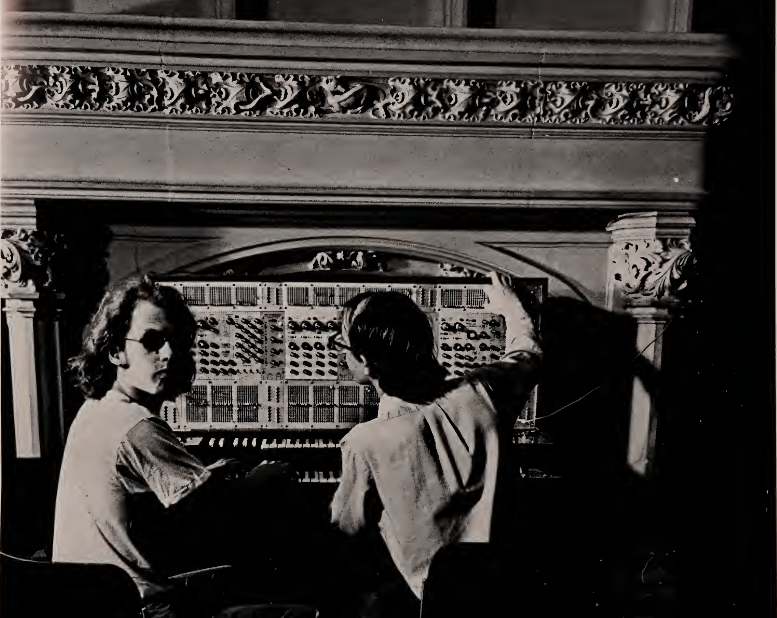

From Conceptual Art...
...to Computer Art...
...to "Generative Systems"...
The image above is from the cover of the exhibition catalog for "Software, Information Technology: Its New Meaning for Art" curated by Jack Burnham at the Jewish Museum in New York in 1970. You can view a pdf of the full program here (missing pages) or a color version here (includes all the pages, some are nsfw) it's definitely worth a look through.
The show drew connections and arranged collaborations between technologists and conceptual artists. For exmpale, pictured here are three members of the R.E.S.I.S.T.O.R.S. (Radically Emphatic Students Interested in Science, Technology and Other Research Studies) a rare/early "computer club" of middle and high school students with conceptual artist Agnes Denes. Pictured here are Peter Eichenberger, Lauren Sarno, John Levine (not present: Nat Kuhn).
The exhibition included early examples of the sorts of work we'll be creating in this class, visual algorithmic compositions, like "Matrix of Knowledge" and "Trigonal Ballet" featured above, as well as musical algorithmic compositions like "the Composer" by Allen Razdow and Paul Conly (Art & Technology, Inc, Boston) an early music synthesizer (the ARP) connected to an early computer (PDP-8) which was programmed to create random musical compositions the audience could "contribute ideas to" by "directly changing the computer program using electro-mechanical devices in front of four seats in the gallery".
The exhibition included algorithmic works with less conventional modes of output like the haptic feedback in Linda Berris's "Tactile Film", the "first motion picture created to be felt as well as seen and heard" designed to be played back through the Vision Subsituttion System (seen here from the front and from the back).
For the purposes of our first assignment it might be worth looking little deeper into some of the exhibitions algorithmic text-based works. The exhibition included many text-based pieces including "Labyrinth", an interactive version of the exhibition catalogue by Ted Nelson, which was also one of the first "hypertext" systems to be created. Let's dive deeper into one of the text-based pieces, "The Boolean Image/Conceptual Typewriter"
Originally produced for the exhibition in 1970 by Carl Fernbach-Flarsheim, the piece is composed by a program called 'Conceptual Typewriter' which is used to generate random spatial outputs of letters and numbers. Here's a modern version I created on netnet (here's the code) based on another version created in processing by the poet and programmer Allison Parrish
...to Generative Art
Today the term "generative art" is pretty well established and while the computer and code are often at the center of these generative systems, as an art practice it extends into various other disciplines and domains, including Fashion (check out the piece D.dress by Mary Huang), Dance (check out this collab between Google Creative Lab and Bill T. Jones), architecture (check out the work of Zaha Hadid) and even bio art (check out the work of Neri Oxman). In 2024 there was even a generative film by Gary Hustwit about the influential generative artist/musician Brian Eno.
Generative art doesn’t have to be digital (we’ll reference historical examples of pre-generative art analog systems throughout the quarter) but they are most often created with the aid of computers today. Sometimes this is accomplished using graphical software with “node based” programming tools, like Rhino/Grasshopper (popular with generative or “parametric” architects) or Max (popular with generative musicians) or Touch Designer (popular with installation artists and VJs). But likely the most traditional approach is using computer code. There have been a number of programming languages used by generative artists including Java (usually with the creative coding framework Processing) or C++ (usually with the creative coding framework Open Frameworks), but today arguably the most commonly used programming language for creating generative art, especially online, is JavaScript. There are a number of frameworks and libraries in this space which we’ll be exploring this quarter, as our focus will be to produce gernative art... online...